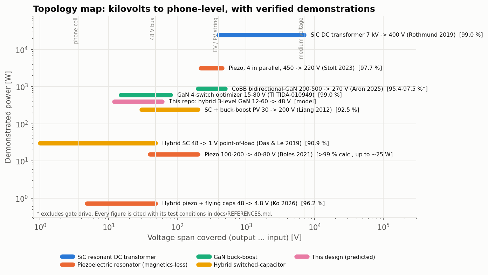

Lesson 7 of 7
The frontier
Where converter research is heading, from medium-voltage DC transformers down to phone-level rails. Every number below comes with its exact test conditions and a verification status. A headline efficiency without its conditions is marketing, not engineering.

High-ratio hybrid switched-capacitor converters
Data-centre 48 V buses must reach a processor's 1 V. A plain buck at D = 0.02 has tiny on-times and huge switching loss, so hybrid converters let capacitors do most of the division and keep inductors small. Das & Le's dual-phase multi-inductor hybrid reached 90.9 % at 48 V to 1 V, 30 A, including gate drive.
Flying-capacitor multilevel converters
Stack more flying capacitors and each switch blocks Vbus/(N-1), while the inductor sees steps at (N-1) times the switching frequency. The flagship is the N = 3 case. The same idea scales up: a 50 kW three-level buck-boost with a planar coupled inductor (Cao et al., TPEL 2023) and MIT's condensed buck-boost with bidirectional GaN switches.
Piezoelectric-resonator converters: no magnetics at all
A piezoelectric resonator stores energy mechanically, in an acoustic vibration of a ceramic disc, instead of in a magnetic field. Switch it at the right moments in its cycle and it can replace the inductor entirely, with potentially far higher power density. Results so far are research-stage: